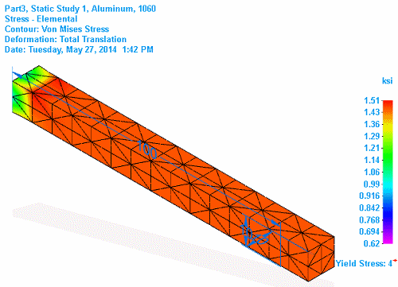

Review analysis results
Review your study results using the following process. Follow the links to specific procedures and detailed information.
In the Simulation Results environment, a color contour map shows how the model reacts to the analysis parameters. The model name, material name, type of analysis, display format, and date and time the study was processed are also identified.

You can change the plot type, control whether contours and deformation are shown in the graphics window, and play back an animation of the model reacting to the parameters of the analysis that you defined. You can also share the results by creating a report or a movie, or saving individual images.
-
The Simulation Results environment is displayed automatically after you successfully mesh and solve a finite element analysis study. But if you open a file containing a previously solved simulation study, results are not shown until you choose to display them.
-
Use the Home tab→Probe command to display node analysis data for the model area and depth that you want to review.
For transient heat and harmonic response studies, you also can Graph nodal analysis results.
-
Plot results. In addition to the currently displayed plot, you can review other types of plots. The type of analysis determines the types of plots available, and the information they convey:
-
Stress component plots, including Factor of Safety plots
-
Thermal plots: Temperature, Heat flux, Applied temperature
-
Structural frame plots: Beam reaction, Beam stress, Beam diagrams
-
Change the appearance of plots on the model by changing the following:
-
Fine-tune the results.
-
(Optional) Verify linear static stress results are at equilibrium by selecting the Home tab→Equilibrium Check command.
-
Share the simulation results:
-
Animate and save simulation results as a movie.
-
Save an image for documentation and review using the Home tab→Output Results group→Save As Image command. You can save individual result plots in any of these formats: .bmp, .jpg, or .tif.
-
(Optional) Save changes to the analysis results display settings so that they are always available.
-
On the ribbon, click Close Simulation Results.

The analysis results files (.ssd) produced by Solid Edge Simulation can be quite large for a large assembly or a document with multiple solved simulations. While the results files are unloaded from memory when you save and close your document, you also can free memory while you continue to work in Solid Edge.
To free memory after closing the Simulation Results environment, in the Simulation pane, right-click the Results node and choose Unload Results.